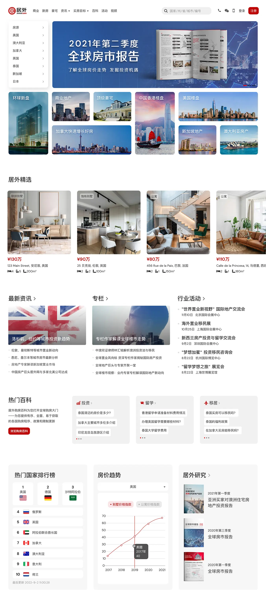

Project Goals
Balanced Emphasis
- Highlight equal significance of property search and market information to provide a well-balanced buyer's experience
User Empowerment
- Allow buyers to choose their own adventure with tailored browsing experience to their specific needs and preferences
Responsiveness
- Ensure intuitive user experience across various devices, catering to the increasing number of mobile users
Redesigned Homepage
It emphasizes the equal importance of both property search and market information sections, providing buyers with a well-balanced browsing experience.
Content Prioritization
The new homepage works like a dashboard for property buyers, allowing them to choose their own adventure by either hunting for properties or gaining market insights. The layout emphasizes the equal importance of both property search and market information sections, providing users with a well-balanced browsing experience.
First Glance Delights
The updated homepage features captivating rotating banners and eye-catching thumbnails, instantly drawing users in and simplifying property exploration. This visually stimulating layout allows users to easily discover and engage with their desired properties at first glance.
Country Selection Panel
The panel is displayed above the banner as the starting point for buyers to embark on their search journey by selecting their preferred nations or regions of interest.

Responsiveness
Based on actual user data, a significant number of users were accessing our website through tablets. Therefore, the new homepage was designed to be responsive and adapted seamlessly to various devices.